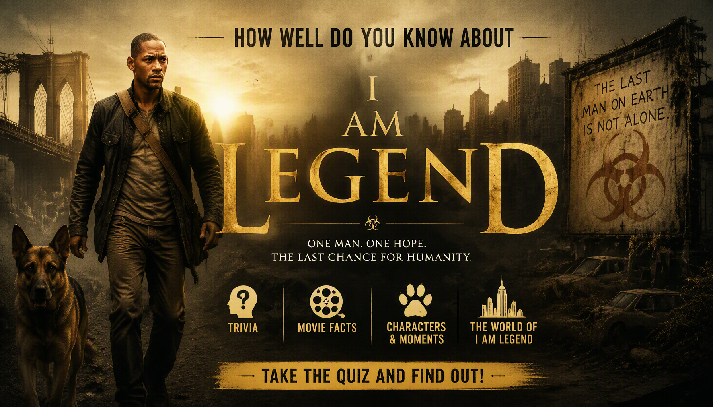

I Am Legend Quiz
Think you can survive the apocalypse? Test your knowledge of Robert Neville, Sam, the Darkseekers, the Krippin Virus, locations and the events of I Am Legend.
Ready? See how much you remember about Robert Neville and the world of I Am Legend.
This quiz contains spoilers for I Am Legend.


About the I Am Legend Movie Quiz
The I Am Legend Movie Quiz is a 25-question trivia challenge based on the 2007 post-apocalyptic science-fiction film I Am Legend. The movie follows Robert Neville as he attempts to survive alone in an abandoned New York City after a devastating virus transforms much of humanity.
Neville spends his days researching the infected, searching for other survivors and working on a possible cure while trying to survive the dangers that emerge after sunset.
This quiz focuses on Robert Neville, Sam, Anna, Ethan, Alice Krippin, the Krippin Virus, the Darkseekers, Neville's experiments, locations and major events from the movie.
I Am Legend Movie Details
Release year: 2007
Director: Francis Lawrence
Genre: Science fiction, post-apocalyptic thriller and horror
Main setting: New York City after the Krippin Virus outbreak
Main character: Robert Neville, played by Will Smith
Key threat: The infected, known as Darkseekers
Key scientific element: The Krippin Virus and Neville's search for a cure
What This Quiz Covers
The questions are based on events, characters and information shown or established in I Am Legend. Some questions test major plot events, while others focus on smaller details from the movie.
Robert Neville
Questions may cover Neville's military background, scientific work, daily routine, survival methods, relationships and attempts to develop a treatment for the infected.
Sam
The quiz includes details about Neville's dog Sam, their relationship and the events surrounding Sam's infection.
The Krippin Virus
Questions cover the original purpose of the Krippin Virus, its connection to the outbreak, transmission and the effect it had on humanity.
The Darkseekers
The quiz covers the infected population, their behaviour, their relationship with Neville and important encounters between Neville and the Darkseekers.
New York City
Questions also cover locations throughout the abandoned city, including Neville's home, places where he searches for supplies and locations connected to important events.
Neville's Experiments
The quiz includes details about Neville's research, his laboratory and his attempts to find a treatment for the infected.
How Quiz Works
The quiz contains 25 questions. Every question has four possible choices, but only one answer is correct. Read each question carefully and select the answer you believe is correct.
Each correct answer gives you 1 point, while an incorrect answer gives you 0 points. With 25 questions in total, your correct answers are converted into a final percentage.
Your final result shows your percentage, number of correct answers, number of incorrect answers, total questions and accuracy, followed by your I Am Legend Movie Knowledge result.
Quiz Navigation
Starting the Quiz
Select START QUIZ on the opening screen to begin. The first question will appear with four possible answers.
Selecting an Answer
Read the question and all four choices before making your selection. Once you choose an answer, the quiz will continue to the next question.
Next and Back Buttons
Use Next to move forward through the questions. The Back button allows you to return to an earlier question and review or change your selection. Your question number and progress are displayed as you move through the quiz.
Finishing the Quiz
Continue until all 25 questions have been answered. When you reach the end, submit your answers to finish the quiz and view your final score and knowledge result.
Try Again and Challenge Friends
After viewing your result, select TRY AGAIN to replay the quiz and attempt a higher score. You can also use SHARE MY RESULT or CHALLENGE YOUR FRIENDS to share your result.
FAQ
How many questions are in the quiz?
There are 25 questions in total, and every question has four possible choices.
What is the maximum score?
The maximum result is 100%. Each correct answer contributes 1 point before the score is converted into a percentage.
What topics are covered?
The quiz covers I Am Legend, including Robert Neville, Sam, Anna, Ethan, Alice Krippin, the Krippin Virus, the Darkseekers, Neville's experiments, locations and major story events.
Is this quiz only about the characters?
No. Character questions are only part of the quiz. Other questions cover the Krippin Virus, the Darkseekers, locations, Neville's scientific work, survival and important plot details.
Which movie does this quiz cover?
This quiz focuses on the 2007 post-apocalyptic science-fiction film I Am Legend, starring Will Smith as Robert Neville.
Do I need to watch the movie before taking the quiz?
It is recommended. The questions are based on events, characters and details from the movie, including information that may be difficult to answer without having watched it.
What does my score mean?
Your percentage shows how many of the 25 questions you answered correctly. Your result also displays your correct answers, incorrect answers, total questions and accuracy.
Can I take the quiz again?
Yes. Select TRY AGAIN after completing the quiz to start another attempt and try to improve your score.
Can I challenge my friends?
Yes. Select CHALLENGE YOUR FRIENDS after completing the quiz to share the challenge and see whether your friends can beat your score.
Spoiler Warning
This quiz contains spoilers for I Am Legend. Questions may reveal important details about Robert Neville, Sam, the Krippin Virus, the Darkseekers, Anna, Neville's experiments and other major events from the movie.
If you have not watched I Am Legend, consider watching the movie before taking the quiz to avoid having important story details revealed.